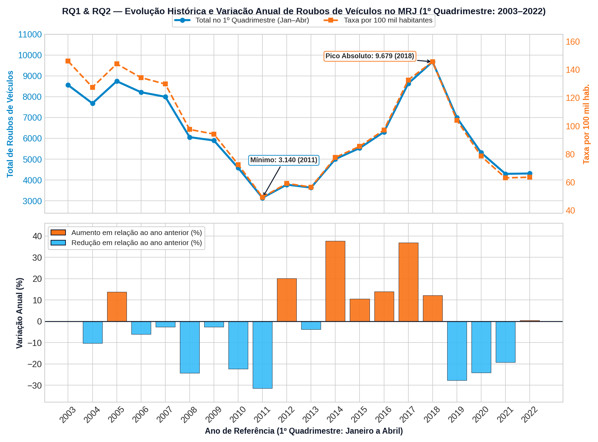
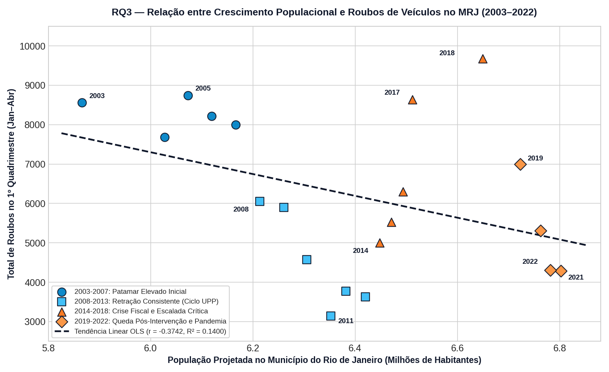

Resumo Executivo / Abstract
Este estudo investiga o comportamento histórico das ocorrências de roubo de veículos no Município do Rio de Janeiro (MRJ) ao longo de duas décadas (2003–2022), utilizando recortes acumulados do primeiro quadrimestre (janeiro a abril) disponibilizados pelo Instituto de Segurança Pública (ISP-RJ) e tabulados pelo Instituto Pereira Passos (DATA.RIO). Foi desenvolvido um pipeline determinístico de Engenharia de Dados em Python para higienização da Tabela 2306, remoção de artefatos de formatação, tratamento de marcadores não numéricos, extração dos metadados jurídicos da aba Definições e auditoria cruzada das taxas por 100 mil habitantes e médias mensais. Os resultados empíricos revelam uma média quadrimestral histórica de 6.216,30 ocorrências ($\text{DP} = 1.982,21$) e mediana de 5.976,00 registros, estruturadas em quatro ciclos distintos: (i) patamar elevado inicial entre 2003 e 2007 (média de 8.238,60 casos); (ii) retração sustentada entre 2008 e 2013 durante a expansão das UPPs, atingindo o mínimo histórico de 3.140 casos ($49,43$ por 100 mil habitantes) em 2011; (iii) severa escalada criminal entre 2014 e 2018, culminando no pico absoluto de 9.679 roubos ($145,57$ por 100 mil habitantes) em 2018; e (iv) desaceleração acentuada entre 2019 e 2022, estabilizando-se em 4.311 registros no último ano da série. Adicionalmente, constatou-se correlação linear negativa de Pearson ($r = -0,3742$) e de Spearman ($\rho = -0,3308$) entre o crescimento populacional do município e o total de roubos, demonstrando que a incidência criminal decorre de choques operacionais, institucionais e de mobilidade urbana, e não da expansão demográfica.
1. Introdução e Questões de Pesquisa
O monitoramento sistemático de indicadores criminais constitui um pilar indispensável para o planejamento de políticas públicas de policiamento ostensivo, alocação de recursos investigativos e avaliação de impacto socioeconômico em grandes metrópoles. No Município do Rio de Janeiro (MRJ), o delito de roubo de veículos apresenta elevada relevância criminológica por refletir simultaneamente a atuação de redes de receptação e desmanche, o grau de controle territorial nas vias expressas e a exposição cotidiana da população à violência patrimonial armada.
A transparência ativa de dados governamentais pelo Instituto de Segurança Pública (ISP-RJ) e pelo portal DATA.RIO viabiliza análises longitudinais rigorosas, porém os arquivos brutos frequentemente são distribuídos em planilhas formatadas para leitura visual humana, contendo células mescladas, notas de rodapé acopladas e marcadores textuais para dados inexistentes. Este trabalho aplica técnicas de Engenharia de Dados e Análise Exploratória de Dados (EDA) sob os princípios internacionais FAIR para responder a três Perguntas de Pesquisa centrais:
- RQ1: Como evoluíram o volume absoluto e a taxa de roubos de veículos por 100 mil habitantes no 1º quadrimestre no Município do Rio de Janeiro entre 2003 e 2022, e quais foram os pontos de inflexão crítica da série?
- RQ2: Quais anos apresentaram os maiores choques de variação anual (absoluta e percentual) e como essas oscilações se distribuem em ciclos plurianuais de segurança pública?
- RQ3: Existe relação estatisticamente positiva entre o crescimento demográfico do Município do Rio de Janeiro e a variação nas ocorrências de roubo de veículos no período analisado?
2. Metodologia e Pipeline de Dados
A fonte primária consiste na Tabela 2306 do portal DATA.RIO, alimentada pelos Registros de Ocorrência (RO) da Polícia Civil consolidados pelo ISP-RJ e tabulados pela Coordenadoria Técnica de Informações da Cidade do Instituto Pereira Passos (IPP). A granularidade temporal é anual, restrita ao acumulado do 1º quadrimestre (janeiro a abril) de cada ano entre 2003 e 2022 ($N = 20$ anos).
Formulações Matemáticas Auditadas no Pipeline
Para cada ano $t \in \{2003, \dots, 2022\}$, o pipeline verifica de forma determinística (tolerância absoluta $\epsilon = 10^{-4}$) as quatro métricas derivadas reportadas pelo IPP/ISP:
$$\Delta_{\text{abs}, t} = \text{Total}_t - \text{Total}_{t-1}, \quad \Delta_{\%, t} = \left(\frac{\text{Total}_t - \text{Total}_{t-1}}{\text{Total}_{t-1}}\right) \times 100$$
$$\text{Taxa}_{100k, t} = \left(\frac{\text{Total}_t}{\text{População}_t}\right) \times 100.000, \quad \text{Média}_{\text{mensal}, t} = \frac{\text{Total}_t}{4}$$
Implementação Modular de Higienização (src/etl.py)
def transform_vehicle_robbery_data(raw_df: pd.DataFrame) -> Tuple[pd.DataFrame, Dict]:
# 1. Isolamento das linhas válidas (índices 9 a 28: anos 2003 a 2022)
df = raw_df.iloc[9:29].copy()
df.columns = [
"ano", "total_jan_abr", "dif_absoluta", "dif_percentual",
"populacao", "taxa_100k", "media_mensal"
]
# 2. Conversão do marcador textual '..' (ano base 2003) para NaN e tipagem estrita
df = df.replace("..", np.nan)
for col in df.columns:
df[col] = pd.to_numeric(df[col], errors="coerce")
df["ano"] = df["ano"].astype(int)
df["total_jan_abr"] = df["total_jan_abr"].astype(int)
# 3. Auditoria algébrica determinística das colunas derivadas (erro zero)
assert np.allclose(df["taxa_100k"], (df["total_jan_abr"] / df["populacao"]) * 1e5, atol=1e-4)
assert np.allclose(df["media_mensal"], df["total_jan_abr"] / 4.0, atol=1e-4)
return df.sort_values("ano").reset_index(drop=True), {"status": "APROVADO_ERRO_ZERO"}3. Resultados e Discussão
Tabela 1: Estatísticas Descritivas da Série Histórica (2003–2022)
| Variável Analisada | N | Média | Mediana | Mínimo | Máximo | Desvio Padrão |
|---|---|---|---|---|---|---|
Total no 1º Quadrimestre (total_jan_abr) |
20 | 6.216,30 | 5.976,00 | 3.140,00 | 9.679,00 | 1.982,21 |
Diferença Absoluta Anual (dif_absoluta) |
19 | -223,53 | -160,00 | -2.684,00 | 2.331,00 | 1.283,63 |
Diferença Percentual Anual (dif_percentual) |
19 | -1,50% | -2,67% | -31,40% | 37,75% | 20,77% |
População Estimada (populacao) |
20 | 6.391.547,44 | 6.400.913,35 | 5.865.737,42 | 6.802.575,57 | 267.889,48 |
Taxa por 100 mil Habitantes (taxa_100k) |
20 | 97,90 | 95,63 | 49,43 | 145,90 | 33,00 |
Média Mensal (media_mensal) |
20 | 1.554,08 | 1.494,00 | 785,00 | 2.419,75 | 495,55 |
Análise de RQ1: Evolução Temporal e Pontos de Inflexão
Em resposta à RQ1, a série histórica exibe comportamento acentuadamente cíclico. Embora o maior valor da taxa relativa tenha ocorrido no início da série em 2003 (145,90 por 100 mil habitantes, com 8.558 casos para uma população projetada de 5,87 milhões), o recorde em volume absoluto e média mensal verificou-se em 2018 (9.679 ocorrências, média de 2.419,75 roubos/mês e taxa de 145,57 por 100 mil habitantes). O gráfico interativo abaixo permite inspecionar simultaneamente o total quadrimestral e a taxa demográfica padronizada.
Análise de RQ2: Choques de Variação Anual e Ciclos Plurianuais
Respondendo à RQ2, a decomposição das diferenças anuais identifica quatro fases plurianuais bem demarcadas: (1) de 2003 a 2007, manutenção de patamar elevado com média de 8.238,60 ocorrências; (2) entre 2008 e 2013, ciclo de retração consistente durante a implantação das Unidades de Polícia Pacificadora (UPPs), destacando-se os recuos de 2008 (-1.940 casos; -24,26%) e 2011 (-1.437 casos; -31,40%, maior queda relativa da série); (3) entre 2014 e 2018, cinco altas anuais seguidas impulsionadas pela crise fiscal e securitária estadual, com o maior salto percentual em 2014 (+37,75%; +1.371 casos) e o maior salto absoluto em 2017 (+2.331 casos; +36,98%); (4) de 2019 a 2022, forte desaceleração iniciada em 2019 (-2.684 ocorrências; -27,73%, maior queda absoluta da série após a Intervenção Federal em 2018), aprofundada durante a pandemia de COVID-19 em 2020 (-24,10%) e 2021 (-19,16%), estabilizando-se em 2022 (+0,44%).

docs/assets/analise_roubo_veiculos_rj.png): Painel consolidado de evolução histórica e variação percentual anual.Análise de RQ3: Dinâmica Demográfica vs. Incidência Criminal
Em relação à RQ3, enquanto a população projetada pelo ISP para o Município do Rio de Janeiro cresceu 15,62% entre 2003 (5.865.737 habitantes) e 2022 (6.782.155 habitantes, após atingir pico de 6.802.576 em 2021), o volume de roubos de veículos em 2022 (4.311 casos) situou-se 49,63% abaixo do patamar de 2003 (8.558 casos). O ajuste da regressão linear por Mínimos Quadrados Ordinários (OLS) resultou na equação $\widehat{\text{Total}} = -2.768,91 \times \text{Pop}_{\text{milhões}} + 23.913,91$ ($r = -0,3742$, $R^2 = 0,1400$), refutando empiricamente a hipótese de que o crescimento vegetativo da população explique o aumento de roubos de veículos na capital fluminense.

docs/assets/dispersao_populacao_roubos_rj.png): Dispersão estratificada por ciclos históricos de segurança pública (2003–2022).4. Conclusão, Limitações e Trabalhos Futuros
A análise longitudinal da Tabela 2306 demonstra que os roubos de veículos no Município do Rio de Janeiro respondem fortemente a ciclos de governança da segurança pública, conjuntura econômico-fiscal estadual e choques de mobilidade urbana, apresentando amplitude superior a 300% entre o vale histórico de 2011 (3.140 casos) e o pico de 2018 (9.679 casos).
Limitações Metodológicas: Conforme documentado na aba Definições da base oficial (normas SENASP/SESEG), a tipificação criminal realizada pela Polícia Civil no Registro de Ocorrência é provisória, podendo sofrer aditamento durante o inquérito policial ou reclassificação pelo Ministério Público e pelo Judiciário. Ademais, o recorte exclusivo do 1º quadrimestre não captura variações sazonais do segundo semestre. Como trabalhos futuros, propõe-se integrar a série com microdados mensais por Circunscrição Integrada de Segurança Pública (CISP) e taxas de recuperação de veículos.
5. Disponibilidade dos Dados e Declaração FAIR
Este projeto atende integralmente aos princípios internacionais FAIR (Findable, Accessible, Interoperable, Reusable):
- Findable (Localizável): Metadados completos no
README.md, identificação formal de autoria (Caio Silva Lopes), curso e semestre, e link perene para o portal DATA.RIO / ISP-RJ. - Accessible (Acessível): Repositório público no GitHub e portal multipágina publicado via GitHub Pages sem barreiras de autenticação proprietária.
- Interoperable (Interoperável): Dados persistidos em formatos universais abertos (
.csv,.csv.gze.json), notas oficiais extraídas emdefinicoes_metadados_isp.txte dicionário de variáveis emdata/data_dictionary.md. - Reusable (Reutilizável): Licenciamento aberto duplo sob MIT License (software) e CC-BY 4.0 (dados e texto), com ambiente determinístico configurado em
requirements.txt.
# Comandos de terminal para clonagem e reprodução integral do pipeline
git clone https://github.com/CaioSIlvaLopes/LINGUAGENS-DE-PROGRAMA-O-Projeto-Pr-tico-G2.git
cd LINGUAGENS-DE-PROGRAMA-O-Projeto-Pr-tico-G2
python -m venv .venv
source .venv/bin/activate # No Windows: .venv\Scripts\activate
pip install -r requirements.txt
python src/etl.py6. Referências Normativas (Padrão ABNT)
- INSTITUTO DE SEGURANÇA PÚBLICA DO ESTADO DO RIO DE JANEIRO (ISP-RJ). Estatísticas de Segurança: Série Histórica Mensal e Quadrimestral no Estado do Rio de Janeiro. Rio de Janeiro: ISP, 2022. Disponível em: http://www.ispdados.rj.gov.br/. Acesso em: 24 maio 2022.
- INSTITUTO PEREIRA PASSOS (IPP) / DATA.RIO. Tabela 2306: Incidências de roubo de veículos, diferenças em relação ao mesmo quadrimestre do ano anterior, taxa por cem mil habitantes e média mensal segundo o 1º quadrimestre de cada ano, no Município do Rio de Janeiro entre Janeiro/Abril/2003 e Janeiro/Abril/2022. Rio de Janeiro: Coordenadoria Técnica de Informações da Cidade, 2022.
- BRASIL. Secretaria Nacional de Segurança Pública (SENASP). Manual de Preenchimento do Formulário de Coleta Mensal de Ocorrências Criminais e Atividades de Polícia. 2. ed. Brasília: Ministério da Justiça, Programa Delegacia Legal / SESEG-RJ, 2015.
- WILKINSON, M. D. et al. The FAIR Guiding Principles for scientific data management and stewardship. Scientific Data, v. 3, n. 160018, p. 1–9, 2016.
- MCKINNEY, W. Data structures for statistical computing in Python. In: Proceedings of the 9th Python in Science Conference (SciPy), v. 445, p. 51–56, 2010.